Everything here runs in your browser and draws on my CV. Start with the biggest project, then pick a way to explore the rest.
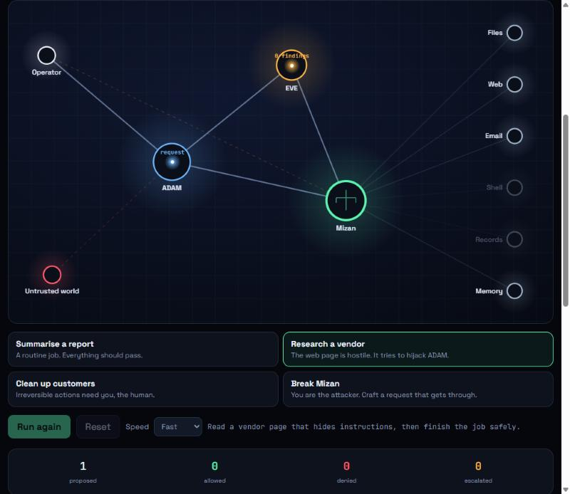
An AI agent proposes actions, an adversarial critic attacks them, and an independent mediator that never reads the agent's explanation applies the policy. Run a hijacked web page through it, approve an irreversible deletion, tamper with the memory ledger, or play the attacker.
Open the arenaThe same work, as a graph, a city, a helix, a metro map, a periodic table and a detection game.
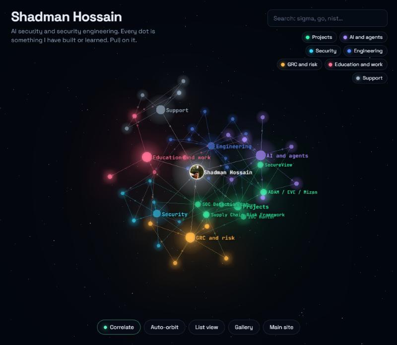
Every project, skill and framework as a linked node in 3D space. Search it, filter it, fly into a node, or press Correlate and watch it cluster the way ThreatWeave groups indicators.
Open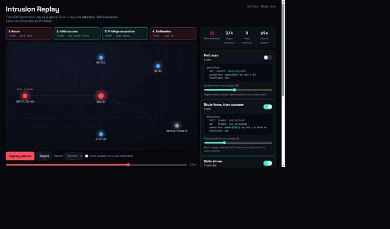
The SOC Detection Lab as a game. Watch a four-stage intrusion with every rule off, then tune the detections: too loose floods the analyst, too lax and the data leaves.
Open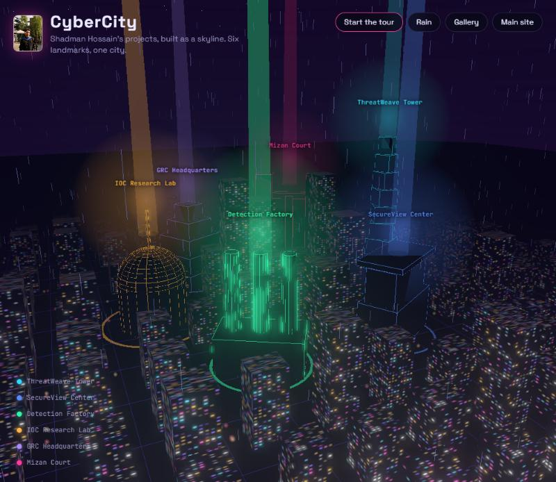
My six projects as landmarks in a 3D night city, with traffic, rain and a guided tour that flies into each one.
Open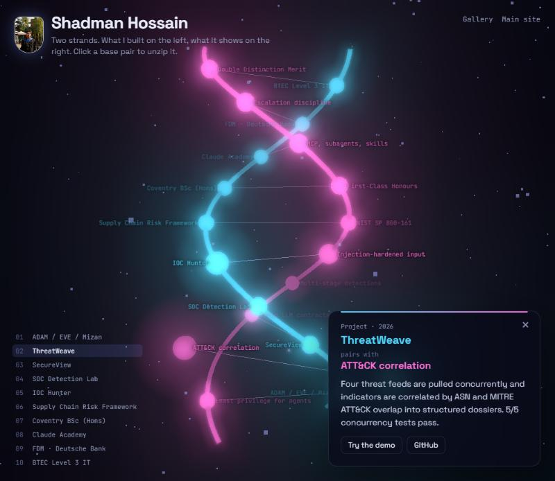
What I built on one strand, what it demonstrates on the other. Click any base pair and it unzips to show the details.
Open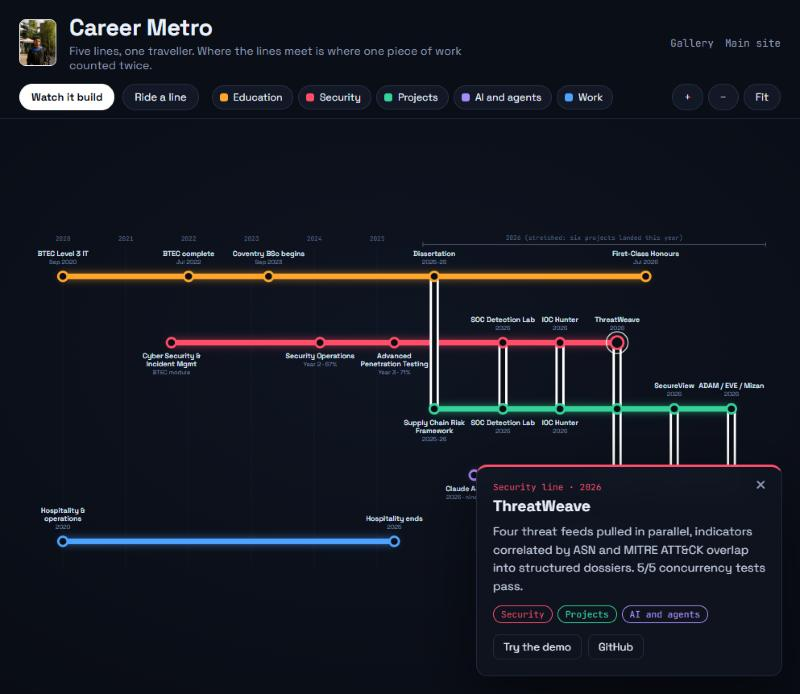
Five lines through six years. Interchanges mark the work that counted twice, like the dissertation that is also a project. Zoom, pan and ride any line.
Open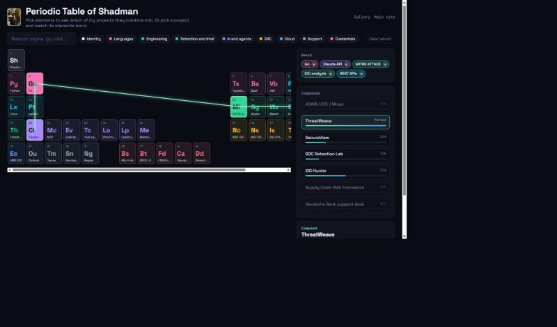
Pick tools and skills to see which of my projects they combine into, or pick a project and watch its elements bond.
OpenFour small ones, each tied to something on my CV: a chess engine I wrote from scratch, an AI-agent defence range, a service-desk triage shift and a SQL injection sandbox.
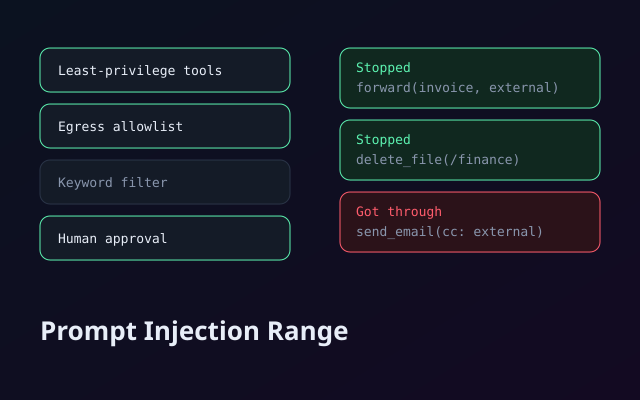
An agent reads untrusted content while it does a job. Switch on defences, run six scenarios and see which attacks still get through and which control breaks an innocent job. It is the thinking behind ADAM / EVE / Mizan, as a game.
Play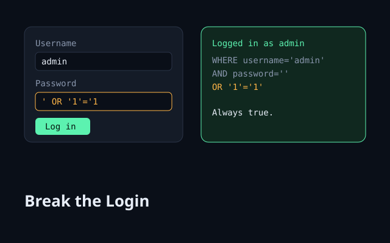
A safe sandbox with a tiny pretend database. Get in as admin without the password, get past a blacklist filter, then find out why parameterised queries cannot be broken.
Play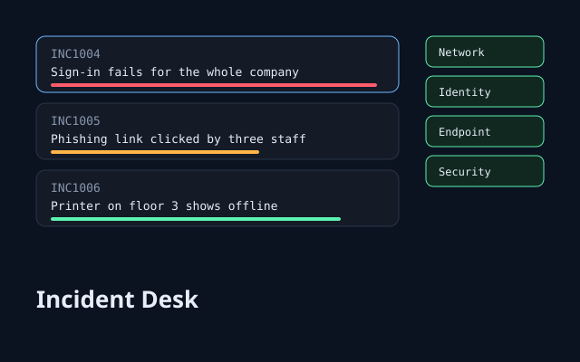
A 75-second shift on a simulated service desk. Set impact and urgency, route each ticket to Network, Identity, Endpoint or Security, and beat the clock.
Play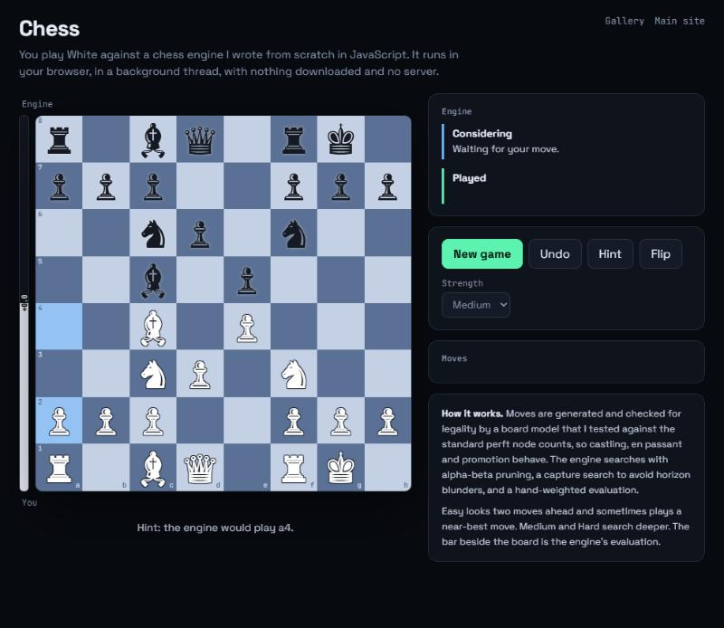
A chess engine written from scratch in JavaScript, with move generation checked against the standard perft counts, alpha-beta search and an evaluation bar. Drag a piece or click a square.
PlayOpen the palette button in the main portfolio's navigation, or press T. Aqua is the water theme; Neural, Orbital, Reactor and Hologram use free particle and 3D libraries.